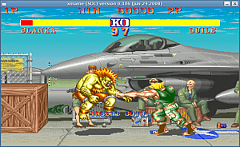

MAME
Archivierte Anleitung
Dieser Artikel wurde archiviert, da er - oder Teile daraus - nur noch unter einer älteren Ubuntu-Version nutzbar ist. Diese Anleitung wird vom Wiki-Team weder auf Richtigkeit überprüft noch anderweitig gepflegt. Zusätzlich wurde der Artikel für weitere Änderungen gesperrt.
Zum Verständnis dieses Artikels sind folgende Seiten hilfreich:
M.A.M.E.  ist die Abkürzung für Multiple Arcade Machine Emulator, was auch die Funktion des Programms beschreibt.
Bei dem Programm handelt es sich um einen Emulator für sehr viele Spielhallen-Videospielautomaten.
Dies bedeutet, dass MAME in der Lage ist, diese Automaten nachzuahmen, sodass man die Originalsoftware, in diesem Fall Spiele, auf diesem imitierten Computer ablaufen lassen kann.
ist die Abkürzung für Multiple Arcade Machine Emulator, was auch die Funktion des Programms beschreibt.
Bei dem Programm handelt es sich um einen Emulator für sehr viele Spielhallen-Videospielautomaten.
Dies bedeutet, dass MAME in der Lage ist, diese Automaten nachzuahmen, sodass man die Originalsoftware, in diesem Fall Spiele, auf diesem imitierten Computer ablaufen lassen kann.
|  |
| xmame |
Installation¶
MAME gibt es in zwei Umsetzungen. Die Programme können über die Paketverwaltung von Ubuntu heruntergeladen und installiert werden. Sie befinden sich in den multiverse-Paketquellen. Das xmame gibt es in Version 0.106 und wird nicht mehr weiter entwickelt. sdlmame gibt es in Version 0.132 und ist damit der aktuellsten Version am nächsten. Zur Installation [1] sind folgende Pakete notwendig:
sdlmame (multiverse)
sdlmame-tools (multiverse, optional)
 mit apturl
mit apturl
Paketliste zum Kopieren:
sudo apt-get install sdlmame sdlmame-tools
sudo aptitude install sdlmame sdlmame-tools
oder
xmame-common (multiverse, wird nicht mehr weiter entwickelt)
mit apturl
Paketliste zum Kopieren:
sudo apt-get install xmame-common
sudo aptitude install xmame-common
Einrichtung¶
MAME besitzt keine eigene graphische Benutzeroberfläche für die Konfiguration und die Auswahl von zu startenden Spielen. Es gibt jedoch einige Benutzeroberflächen, welche man sich zusätzlich für eine einfachere Konfiguration und Benutzung installieren kann. Siehe dazu den entsprechenden Abschnitt Graphische Oberflächen in diesem Artikel.
MAME emuliert zwar die Spielautomaten, es bringt aber aufgrund der Tatsache, dass die Spiele teilweise urheberrechtlich geschützt sind, keine Spiele mit. Es gibt jedoch einige freigegebene Spiele auf der Seite mamedev.org . Diese kann man sich für das erste Ausprobieren von MAME herunterladen.
Hat man ein Spiel heruntergeladen (üblicherweise eine Zip-Datei), muss dieses nicht entpackt werden. Es muss nur noch an die Stelle verschoben werden, wo MAME nach Spielen sucht. Der voreingestellte Pfad ist /usr/share/games/xmame/roms/ . Er ist durch die Änderung der rompath Einstellung in der Datei /etc/xmame/xmamerc frei wählbar.
Bedienung¶
Verzichtet man auf eine graphische Oberfläche, so kann man MAME im "Anwendung ausführen"-Dialog oder im Terminal mit folgendem Befehl starten [2]:
xmame <Spielename>
Dabei ist <Spielename> der MAME-interne und nicht der komplette Spielename. Bei dem Spiel Alien Arena ist es z.B. alienar und das Spiel wird mit xmame alienar gestartet.
Der MAME-interne Spielename ist auch der Name der heruntergeladenen Zip-Datei des Spiels.
Benutzt man xmame im Terminal und gibt nicht den korrekten Namen an, werden mögliche Spiele aufgelistet.
sdlmame und xmame bietet viele Parameter, welche die Bild- und Tonausgabe und die Eingabe regeln.
Eine Übersicht erhält man unter anderem mit dem Befehl man sdlmame oder man xmame. So gibt es z.B. die Parameter -s x (Fenstergröße um Faktor x skalieren) und -fullscreen (Vollbildausgabe).
| wichtige Tasten | |
| Taste(n) | Beschreibung |
| 5 , 6 | Münzeinwurf Spieler 1,2 |
| 1 , 2 | 1-/2-Spieler Spiel starten |
| → , ← , ↑ , ↓ | Bewegung Spieler eins |
| Strg , Alt , , ⇧ | Aktionstasten Spieler eins |
| R , F , D , G | Bewegung Spieler zwei |
| A , Q , W , S | Aktionstasten Spieler zwei |
| P | Pause |
| ⇧ + F7 | Spiel speichern |
| F7 | Spiel laden |
| F3 | Reset |
| Tab ⇆ | Einstellungen |
| Esc | Beenden |
In den Einstellungen, die man über die Tab ⇆ Taste erreicht, kann man die Tastenbelegung auch einsehen und ändern.
Graphische Oberflächen¶
Es ist ratsam, für MAME eine graphische Benutzeroberfläche zu benutzen, weil es damit leichter ist, die Einstellungen für die Software zu tätigen. Außerdem bieten die graphischen Benutzeroberflächen nützliche Funktionen in Bezug auf die Spielauswahl an. So zeigen sie z.B. die Auswahl der vorhandenen Spiele an, welche sich dann nach bestimmten Kriterien filtern oder sortieren lassen können (z.B. Jahr, Hersteller etc.).
Empfehlenswerte Frontends sind
gmameui (multiverse)
mit apturl
Paketliste zum Kopieren:
sudo apt-get install gmameui
sudo aptitude install gmameui
und
kxmame (multiverse, seit 2007 nicht mehr weiter entwickelt)
mit apturl
Paketliste zum Kopieren:
sudo apt-get install kxmame
sudo aptitude install kxmame
Probleme¶
Selbst wenn sich das Spiel im richtigen Verzeichnis befindet und mit dem richtigen Befehl gestartet wird, kann es vorkommen, dass der Startvorgang mit einer Fehlermeldung wegen nicht gefundener Spieldateien abbricht. Dies kann folgende Ursachen haben:
Spieleklone¶
MAME führt in seiner Spieleliste auch eine Reihe von sogenannten Klonen. Dies sind Spiele, die auf anderen Spielen aufbauen und auf diese sogenannten Parent-ROMs (Eltern-ROMs) angewiesen sind, d.h. es werden zusätzlich noch die Dateien des Originalspiels benötigt, auf dem das Spiel basiert.
Versionskonflikte¶
Im Laufe der Zeit wurden verbesserte und fehlerbereinigte Abbilder von den Spielen erstellt. Dies hat zur Folge, dass einige Spiele nicht mit einigen Versionen von MAME funktionieren.
BIOS fehlt¶
Um das Spiel emulieren zu können, wird ein Abbild des BIOS des Zielsystems benötigt. Diese sind oft urheberrechtlich geschützt und deswegen nicht im Umfang des Emulators enthalten.


- Erstellt mit Inyoka
-
 2004 – 2017 ubuntuusers.de • Einige Rechte vorbehalten
2004 – 2017 ubuntuusers.de • Einige Rechte vorbehalten
Lizenz • Kontakt • Datenschutz • Impressum • Serverstatus -
Serverhousing gespendet von